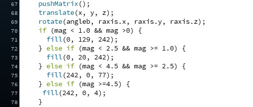
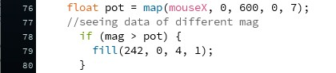

Project 4 : 3D Earthquake Visualization
Mapping Earthquake data on a model and letting users view the data properly.
Week 1 : Concept
My IXD Model
Inspiration
I wanted to try my best to recreate my IXD 2 TV project. In my project it is showing the data was regarding stolen data from people spreading around the globe. However, I couldn't find the spreadsheet of those data so I tried the Earthquake data instead and learnt it from the Coding train tutorial.
Week 2 : Building the project
My IXD Model
Beginning
For week 2, I started coding the model however I made a type mistake regarding the latitude hence the data was not visualised properly.
Week 3 : Fixing the system and adding interactions
Fixing the model and changing data color based on magnitude
For week 3, I started off by making sure the data is mapped correctly. I also changed the color based on the magnitude.
Version 1
Version 2
Adding interaction
I added mouseX as an element. Based on the range of mouseX, it will show data of earthquakes that are 1.0+, 2.5+ and 4.5+ magnitude.
Improving Interactions
Instead of limiting my data to 3 ranges. I wanted the data to respond to mouseX range.
Version 3
Adjusting colors
Lastly, I tinkered with the colors of the data to see how it will best visualise the earthquake data.
Dividing the different groups of magnitude with different colors
Differentiating the magnitude with the hue spectrum.
Adding External Controls
I added external controls like a potentiometer to replace mouseX and a button to stop the globe. However, I realised that controlling the speed is not what I was trying to achieve as my goal was for people to look at any part of the globe than to see it just spin. So I changed velocity to rotation angle of the sphere. I also added 3 more potentiometer. 1 to control the visualisation of data, another to control the zoom in and out function, one to make the sphere rotate on X and another on Y. In total I have 4 potentiometer.

Dividing the different groups of magnitude with different colors

Differentiating the magnitude with the hue spectrum.
Final Version
Final Adjustments
Lastly, from the feedbacks I received, I changed the data to show greatest magnitude earthquakes first and the smallest as last.
Assembly
I replaced 3 of the potentiometer with sliding potentiometers. The first time I tried without casing, it was reading correctly but when I assembled them all in the casing, it started to have issues. I was not sure what exactly was the problem and tried multiple times but due to the lack of time. I decided to end my final project here.

Dividing the different groups of magnitude with different colors
Differentiating the magnitude with the hue spectrum.